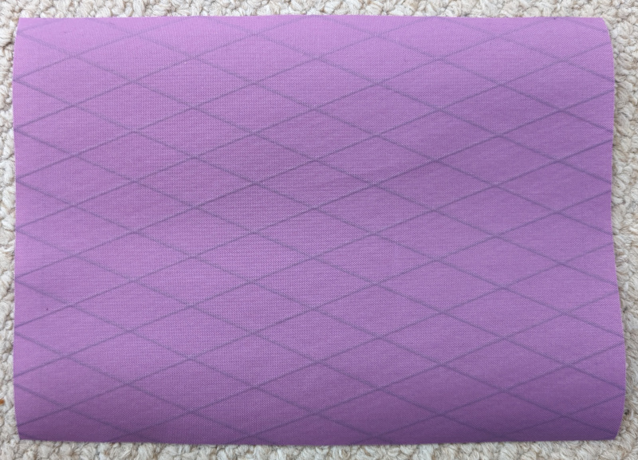

Sacoche Banane #
Notation :
- Dimension finale
- X largeur
- Y hauteur
- Z profondeur
- Ce tutorial réalise une sacoche de dimension suivante
- X = 13cm
- Y = 10cm
- Z = 4cm
Etape 1 : face avant zippée #
Découper un morceau de tissu de X+2 * Y+2.

Découper le en longueur à 3 cm du bord.
Découper un zip à la bonne longueur (X+2) puis le coudre.
Retailler le tissu à la bonne hauteur (Y+2) si nécessaire. (optionel) Ajouter des éléments décoratifs ou utilitaires (broderie, bande, etc…)
Et coudre les bandes permettant d’aider à l’ouverture fermerture du zip.
Coudre un bout de tissu de taille identique sur l’intérieur afin de fermer la poche
Etape 2 : face arrière #
Découper un bout de tissu de la même taille que la face avant.
Découper 2 pièces de tissu pour les attaches latérales (en miroir)
Plier chaque pièce en deux puis les refermer.
Les retourner et les coudre sur la face arrière de chaque côté.
Etape 3 : bande centrale #
Tracer la ligne de couture (1cm du bord) sur la face arrière. Le contour intérieur (bande de couture) doit faire la longueur X + Y.
Le contour complet fait donc 2X + 2Y. La bande centrale doit faire cette même longueur une fois assemblée. Donc il nous faut 2 bandes :
- une bande de 2/3 * (2X+2Y) + 2 (ajout de 2 pour la couture de liaison)
- une bande de 1/3 * (2X+2Y) + 2 (ajout de 2 pour la couture de liaison)
La largeur est de Z + 2
Première bande (zippée) #
Découper la première bande puis ajouter un zip.
Deuxième bande et assemblage #
Découper la deuxième bande et assembler
Etape 4 : assembler la sacoche #
Coudre toute la bande centrale sur les faces déjà préparées. Pour les finitions, passer un biais sur les coutures.
Etape 5 : lanières #
Découdre les attaches pour passer la lanière dedans. Puis recoudre avec une couture visible.
Produit fini #
Ajouter les cordelettes.